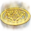
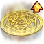
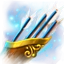
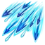

天赋库
1,605 项天赋资源完整中文条目：831 项英雄专属、774 项通用与公共资源。每项可以查效果、激活费用、冷却、资源消耗、成长公式、套装与来源。
原版常把招式本体、强化、被动属性与通用技能都做成“天赋”。按资源登记整理，未登记条目保留状态标签，不能把文件数量直接当成同一版本玩家可获得的数量。
找到 1605 条 · 第 1 / 34 页
绘阵炼金术被动／触发 · 第 1 层 · 英雄专属
腐蚀物质主动施放 · 第 1 层 · 英雄专属
分解被动／触发 · 第 5 层 · 英雄专属
特殊酵素被动／触发 · 第 2 层 · 英雄专属
胶液喷洒主动施放 · 第 2 层 · 英雄专属
活性化合物被动／触发 · 第 3 层 · 英雄专属

炼金法阵引导施放 · 第 1 层 · 英雄专属

守护法阵被动／触发 · 第 5 层 · 英雄专属
副作用被动／触发 · 第 2 层 · 英雄专属
水银之力主动施放 · 第 3 层 · 英雄专属
硫磺之力主动施放 · 第 3 层 · 英雄专属
水银催化剂被动／触发 · 第 4 层 · 英雄专属
硫磺催化剂被动／触发 · 第 4 层 · 英雄专属
庇护被动／触发 · 第 1 层 · 英雄专属
天使之光主动施放 · 第 1 层 · 英雄专属
真光被动／触发 · 第 5 层 · 英雄专属
信仰试炼被动／触发 · 第 3 层 · 英雄专属
灵光信标开关技能 · 第 1 层 · 英雄专属
充盈被动／触发 · 第 2 层 · 英雄专属
复仇之矛主动施放 · 第 2 层 · 英雄专属
义怒被动／触发 · 第 5 层 · 英雄专属
天使飞行引导施放 · 第 3 层 · 英雄专属
生命守护被动／触发 · 第 2 层 · 英雄专属
复生被动／触发 · 第 2 层 · 英雄专属
恩典被动／触发 · 第 4 层 · 英雄专属
无界被动／触发 · 第 4 层 · 英雄专属

附魔箭矢被动／触发 · 第 1 层 · 英雄专属
疾风齐射引导施放 · 第 1 层 · 英雄专属
箭雨被动／触发 · 第 5 层 · 英雄专属
压制射击被动／触发 · 第 2 层 · 英雄专属
重新部署主动施放 · 第 1 层 · 英雄专属
领先一步被动／触发 · 第 5 层 · 英雄专属
有利位置被动／触发 · 第 3 层 · 英雄专属
主动防御被动／触发 · 第 2 层 · 英雄专属
精准射击被动／触发 · 第 2 层 · 英雄专属
决胜射击主动施放 · 第 3 层 · 英雄专属

箭幕轰击引导施放 · 第 3 层 · 英雄专属
贯穿伤口被动／触发 · 第 4 层 · 英雄专属
双重射击被动／触发 · 第 4 层 · 英雄专属
调色盘被动／触发 · 第 1 层 · 英雄专属
绘兽主动施放 · 第 1 层 · 英雄专属
跃动之色被动／触发 · 第 5 层 · 英雄专属
毁灭之色被动／触发 · 第 2 层 · 英雄专属
生命之色主动施放 · 第 2 层 · 英雄专属
不竭之色被动／触发 · 第 5 层 · 英雄专属
色彩之速被动／触发 · 第 3 层 · 英雄专属
大师颜料被动／触发 · 第 1 层 · 英雄专属
对比被动／触发 · 第 2 层 · 英雄专属